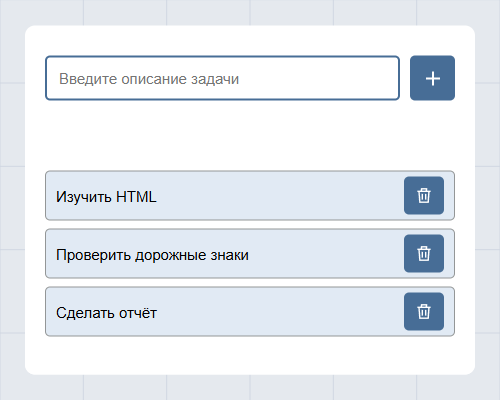
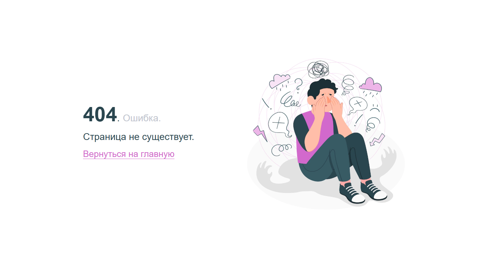
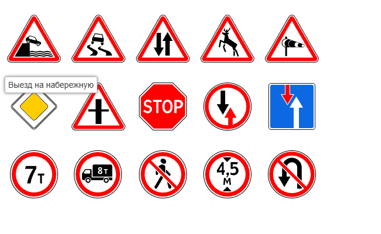

HTML-разметка
Логичная структура, заголовки, ссылки, изображения и смысловые блоки.
Начинающий web-разработчик
Учусь создавать понятные сайты.
От первой строки HTML —
к самостоятельным веб-проектам.
HTML · CSS · внимание к деталям
01 / Знакомство
Меня зовут Алиса Морозова. Я начинающий web-разработчик: изучаю технологии создания сайтов и собираю первые проекты в портфолио.
Мне интересно, как из текста, изображений и нескольких правил оформления получается удобная страница. Сейчас разбираюсь в семантическом HTML, CSS и работе с GitHub, а новые знания закрепляю в учебных проектах.
Мой подход: понять задачу, собрать структуру, проверить результат.
02 / Направления
Логичная структура, заголовки, ссылки, изображения и смысловые блоки.
Композиция страницы, типографика, цвета, отступы и расположение карточек.
Небольшие интерфейсы, в которых можно применить и проверить новые знания.
03 / Практика

Добавление и удаление задач, собственная цветовая палитра и SVG-иконки.

Понятное сообщение об ошибке, иллюстрация и возможность вернуться на главную.

Галерея SVG-изображений с названиями знаков. Практика относительных путей и размещения элементов на странице.
HTML · CSS · jQuery UIРассмотреть работу04 / Обучение
Изучаю работу браузера, HTTP и инструменты разработчика. Организую исходные материалы лабораторных в репозитории GitHub.
Работаю с текстом, ссылками и изображениями. Создаю страницу ошибки, галерею дорожных знаков и список дел.
Собираю персональную страницу: выделяю смысловые области, оформляю карточки проектов и размещаю боковую колонку.
05 / Контакты
Интересуетесь веб-разработкой? Буду рада знакомству.
Напишите мне и расскажите о своей идее.